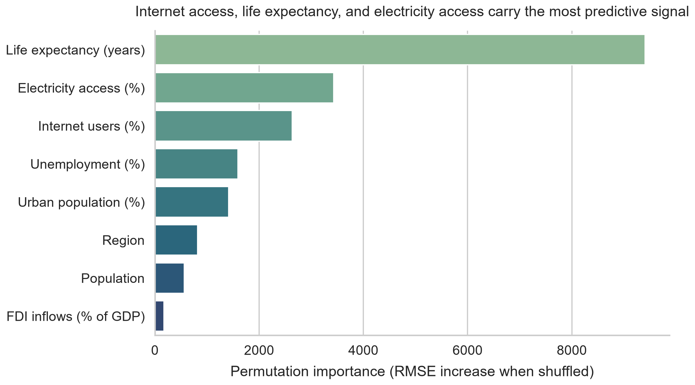
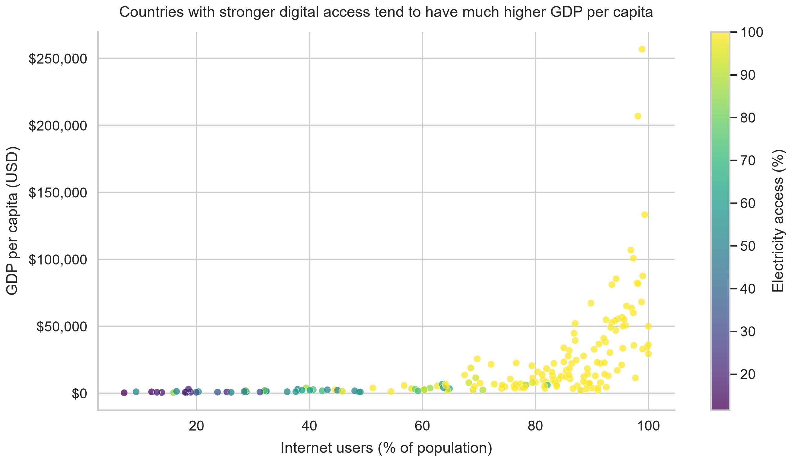
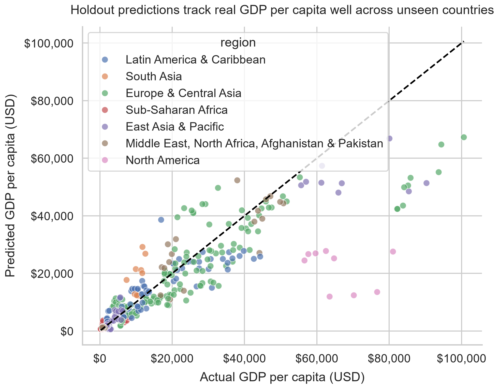
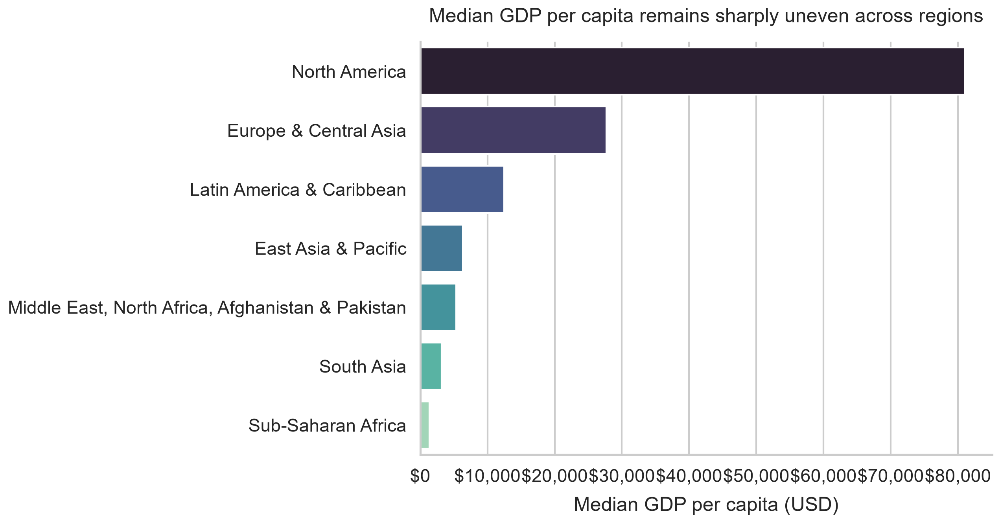
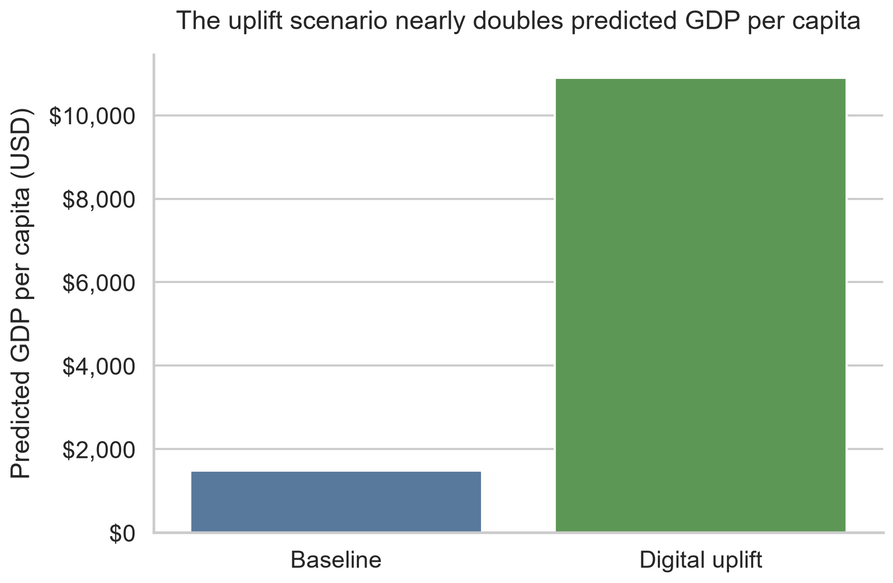

Main takeaway
The most predictive indicators were life expectancy, electricity access, internet usage, unemployment, and urbanization. Richer countries do not just have higher output; they have stronger access systems.

Udacity Data Scientist Nanodegree · udablog project
A World Bank analysis across 217 countries shows that prosperity clusters around basic capability systems: health, electricity, internet access, and trade connectivity.

The most predictive indicators were life expectancy, electricity access, internet usage, unemployment, and urbanization. Richer countries do not just have higher output; they have stronger access systems.

I evaluated models with grouped splits, so a country never appears in both training and testing. The best gradient boosting model generalized well enough to make the scenario work credible as a directional estimate.

Median GDP per capita still varies sharply across regions. The latest-year summary reinforces why access and infrastructure matter: regions with stronger fundamentals cluster at much higher income levels.

Starting from a real Sub-Saharan African baseline close to Benin's 2023 profile, the model projects a large increase in GDP per capita when internet access, electricity access, life expectancy, trade openness, and education spending are lifted.
